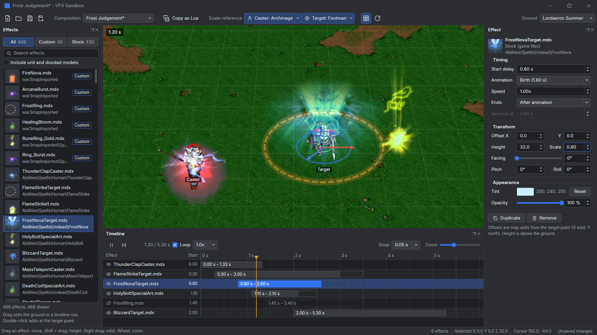
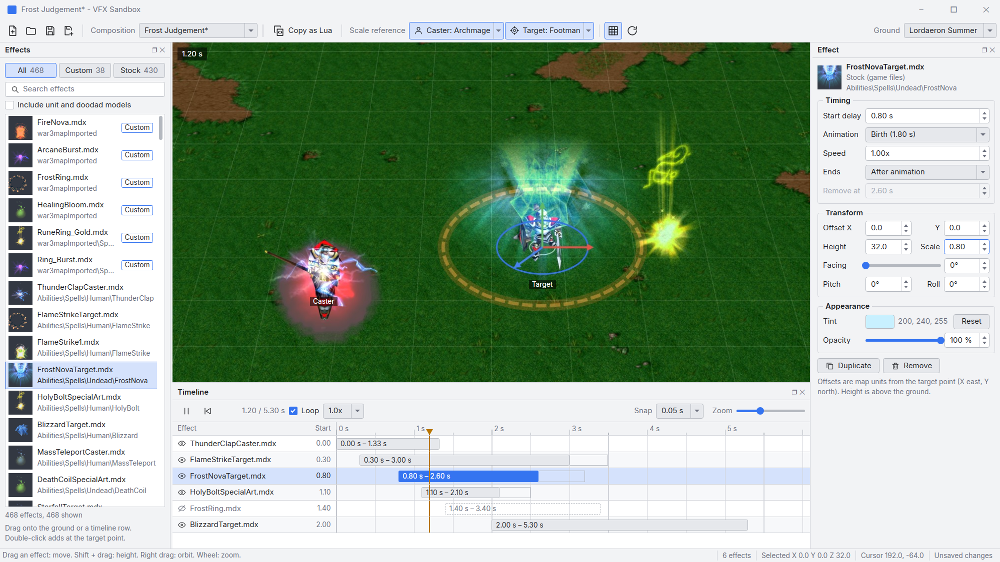
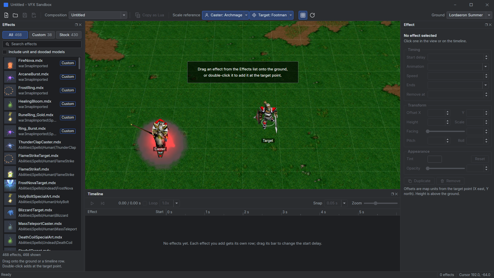
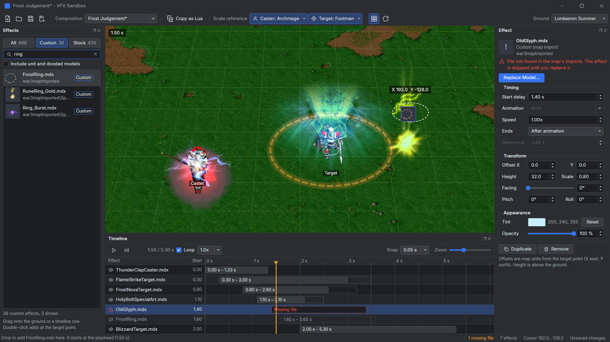
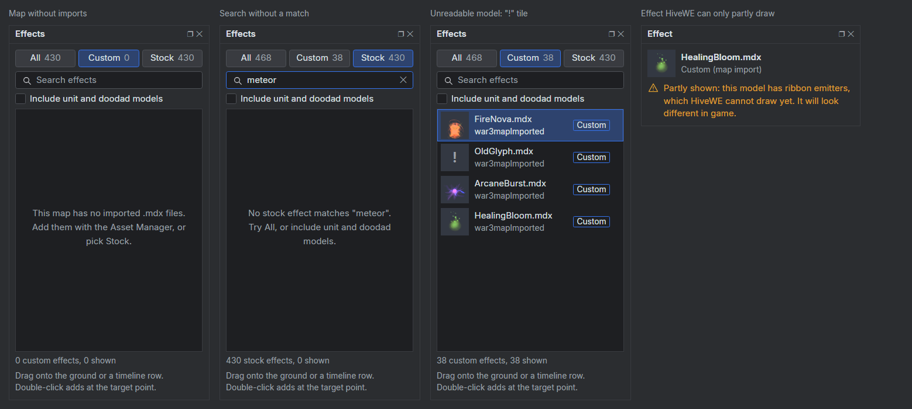
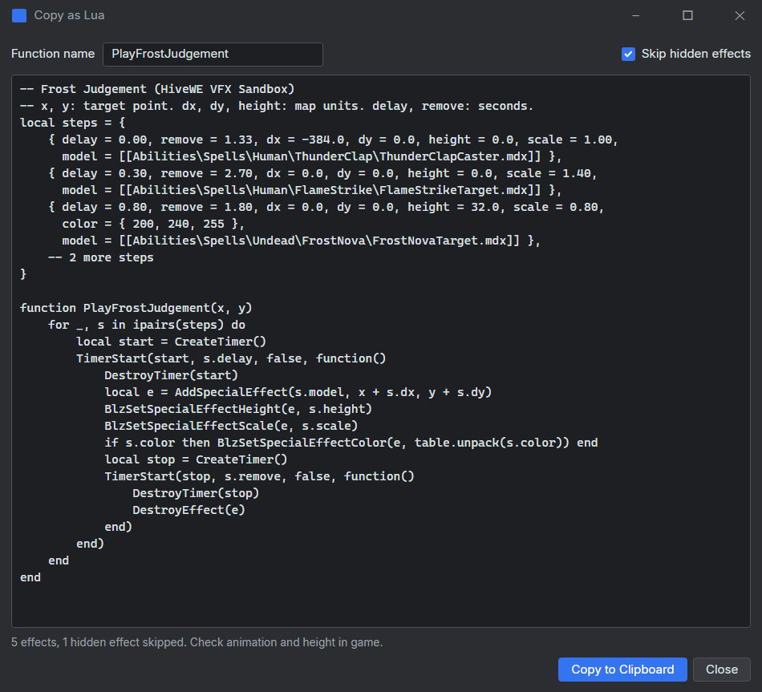
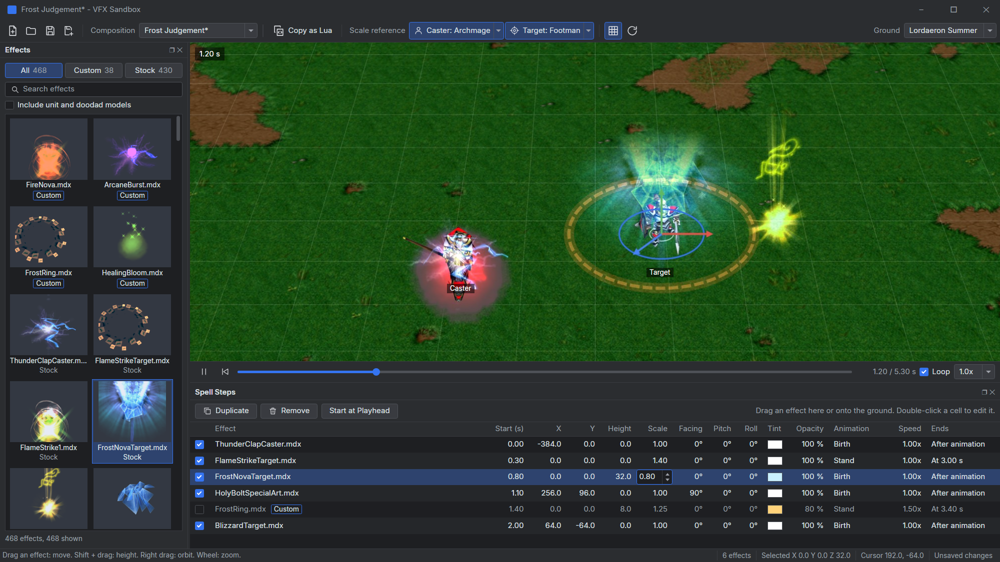

Two layouts of one new window. The 3D view pictures are composed from real HiveWE renders of stock effects on the real terrain
capture; the live view will look different in detail. "war3mapImported\..." names, delays, durations and counts are sample values
(430 is the real stock VFX/SFX count). Pages open in Light with #light after the file name.
a-playing.html: overlap between effects is visible at a glance and delays are changed by dragging bars.


a-empty.html: new composition; hint in the view and the timeline, transport and settings disabled.

a-problems.html: Custom filter with a search, an effect being dragged in, and a saved effect whose import is gone.

a-library-states.html: list without imports, search without a match, unreadable model, partly drawn effect.

a-lua.html: second step, the Copy as Lua dialog.

b-steps.html: every value of every effect is visible and typed directly; timing is read as numbers.
